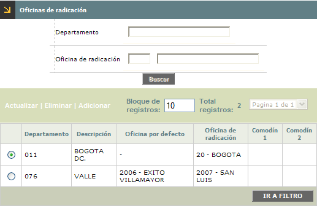
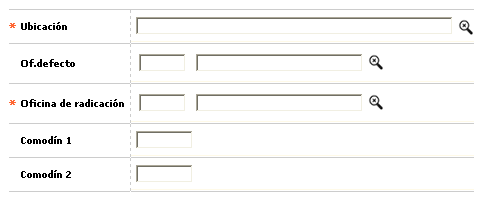
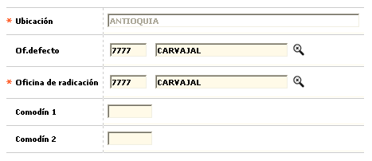

Oficinas de radicación
Pantalla que permite la consulta y/o actualización de la tabla que contiene la parametrización necesaria para que el sistema controle la adecuada asignación de la oficina de radicación o una oficina por defecto específica, a nivel departamental, al ingresar las novedades de cambio de oficina de radicación.

El formulario contiene los enlaces: Actualizar, Eliminar y Adicionar.
Adicionar: Si el usuario invoca la opción Adicionar se despliega un formulario con los siguientes bloques:

Ubicación |
Campo obligatorio que posee lista de valores poblada a través de la opción Información geopolítica del grupo de Tablas corporativas del Núcleo, de la cual se selecciona el departamento para el cual se requiere definir la oficina de radicación asignada o la oficina por defecto correspondiente. |
Oficina defecto |
En este campo con lista de valores poblada a través de la opción Estructura orgánica se puede seleccionar la oficina que por defecto servirá de base o referente para los posibles cambios de oficina de radicación de las obligaciones. |
Oficina radicación |
Campo obligatorio que posee lista de valores poblada a través de la opción Estructura orgánica de la que debe seleccionarse la oficina que por defecto servirá de base o referente para los posibles cambios de oficina de radicación de las obligaciones. |
Comodín 1 |
En este campo numérico de 5 dígitos, no obligatorio, se registra el o los dígitos por los que usualmente inicia el código de las oficinas del departamento seleccionado. |
Comodín 2 |
Campo numérico de 5 dígitos, no obligatorio, en el que se registra de ser necesario, el o los dígitos por los que usualmente inicia el código de las oficinas, diferentes a los registrados en el campo Comodín 1, del departamento seleccionado. |
Actualizar: Al activar ese enlace se despliega un formulario en el cual los únicos campos modificables son: Oficina defecto, Oficina de radicación, Comodín 1, y Comodín 2.
